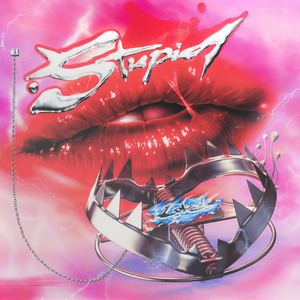

Like most people, I'm a big fan of music. To be honest, I was never really a playlist person up until recently when I finally got Spotify Premium (very good investment). Before that, I would just let YouTube run on autoplay and listen to whatever came up (a lot of my friends would be cringing at the thought). But I would like to share some of my favorite songs with you. These are obviously not all of them, I have too many favorites to do that.
Please press the play button underneath each song name to listen, and press the pause button to stop.
★
Melt - Hatsune Miku - Supercell
I rarely listen to vocaloid songs, which is why this is actually a cover of the original. Further, it is much more calm and soothing than the music I normally listen to, but I think it is a good change of pace.
Dionysus - BTS - Map of The Soul: Persona
Though this is not my favorite BTS song, and they have since come out with even more music, this was one of the first albums I got to watch them release. This is probably my favorite song on said album, and therefore it holds a special place in my heart. This is a better representation of the music I listen to most often.
Blow Me (One Last Kiss) - P!NK - Blow Me (One Last Kiss)
I think P!NK is super underrated (even though she's pretty popular anyway) and I enjoy a lot of her music. This kind of goes to show that my taste in pop music tends to be 2000s-2010s throwbacks, though.
Stupid Love - Lady Gaga - Chromatica
This song only came out in 2020 but I think it still gives 2010 vibes (maybe that's just Lady Gaga), which further proves my point about how I only listen to pop from 5-10 years ago.
★
Please note: I will have also mentioned this in the comments on the Canvas submission, but in case you missed it:
I was unable to get the audio to work on Firefox. I am not sure what the problem is, because the buttons and everything work just fine on Google Chrome. Please switch to Google Chrome just to verify that the music does work. Other than that, everything else should be the same.
★